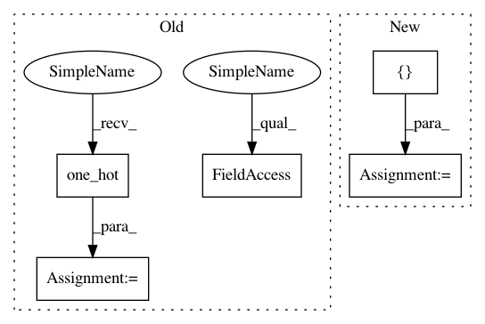

c6035419bcd9637fe43c48f4bc71a66310c275c7,contents/5_Deep_Q_Network/DQN_modified.py,DeepQNetwork,_build_net,#DeepQNetwork#,68
Before Change
with tf.variable_scope("eval_net"):
// c_names(collections_names) are the collections to store variables
c_names, n_l1, w_initializer, b_initializer = \
["eval_net_params", tf.GraphKeys.GLOBAL_VARIABLES], 10, \
tf.random_normal_initializer(0., 0.3), tf.constant_initializer(0.1) // config of layers
self.q_eval = build_layers(self.s, c_names, n_l1, w_initializer, b_initializer)
// ------------------ build target_net ------------------
with tf.variable_scope("target_net"):
// c_names(collections_names) are the collections to store variables
c_names = ["target_net_params", tf.GraphKeys.GLOBAL_VARIABLES]
self.q_next = build_layers(self.s_, c_names, n_l1, w_initializer, b_initializer)
with tf.variable_scope("q_target"):
q_target = self.r + self.gamma * tf.reduce_max(self.q_next, axis=1, name="Qmax_s_") // shape=(None, )
self.q_target = tf.stop_gradient(q_target)
with tf.variable_scope("q_eval"):
a_one_hot = tf.one_hot(self.a, depth=self.n_actions, dtype=tf.float32)
self.q_eval_wrt_a = tf.reduce_sum(self.q_eval * a_one_hot, axis=1) // shape=(None, )
with tf.variable_scope("loss"):
self.loss = tf.reduce_mean(tf.squared_difference(self.q_target, self.q_eval_wrt_a, name="TD_error"))
After Change
q_target = self.r + self.gamma * tf.reduce_max(self.q_next, axis=1, name="Qmax_s_") // shape=(None, )
self.q_target = tf.stop_gradient(q_target)
with tf.variable_scope("q_eval"):
a_indices = tf.stack([tf.range(tf.shape(self.a)[0], dtype=tf.int32), self.a], axis=1)
self.q_eval_wrt_a = tf.gather_nd(params=self.q_eval, indices=a_indices) // shape=(None, )
with tf.variable_scope("loss"):
self.loss = tf.reduce_mean(tf.squared_difference(self.q_target, self.q_eval_wrt_a, name="TD_error"))
with tf.variable_scope("train"):
In pattern: SUPERPATTERN
Frequency: 3
Non-data size: 5
Instances
Project Name: MorvanZhou/Reinforcement-learning-with-tensorflow
Commit Name: c6035419bcd9637fe43c48f4bc71a66310c275c7
Time: 2017-08-15
Author: morvanzhou@gmail.com
File Name: contents/5_Deep_Q_Network/DQN_modified.py
Class Name: DeepQNetwork
Method Name: _build_net
Project Name: tensorflow/models
Commit Name: b045ce7d71c64336e34589d20993bbbed2399806
Time: 2019-10-03
Author: hongkuny@google.com
File Name: official/nlp/xlnet_modeling.py
Class Name: TransformerXLModel
Method Name: call
Project Name: analysiscenter/batchflow
Commit Name: 6dad66511b8432570eb53b67b8fd889913ac15e3
Time: 2017-11-01
Author: rhudor@gmail.com
File Name: examples/opensets/mnist_model2.py
Class Name: MyModel
Method Name: _build
Project Name: MorvanZhou/Reinforcement-learning-with-tensorflow
Commit Name: c6035419bcd9637fe43c48f4bc71a66310c275c7
Time: 2017-08-15
Author: morvanzhou@gmail.com
File Name: contents/5_Deep_Q_Network/DQN_modified.py
Class Name: DeepQNetwork
Method Name: _build_net